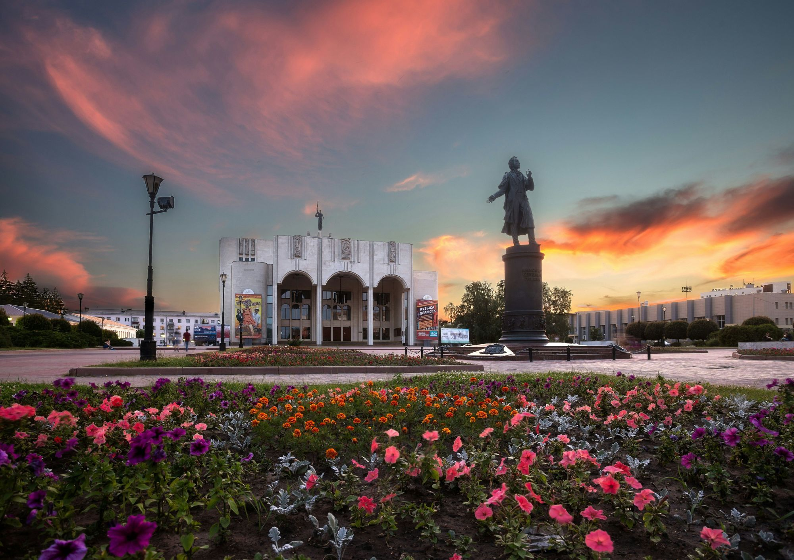

Совку агриппину принято считать самым крупным представителем группы чешуекрылых по размаху крыльев. Различные литературные источники приводят несколько отличающиеся между собой данные о максимальном размахе её крыльев, которые находятся в промежутке от 25 до 31 см[7][8][4][5]. При этом, многие авторы не указывают источники приводимой ими информации. В то же время, большинство источников приводят максимальный размах её крыльев в пределах 270—280 мм. Доподлинно известно о существовании как минимум двух экземпляров совки агриппины, которые могут считаться крупнейшими из когда-либо пойманных. Первый был пойман в Коста-Рике и при длине переднего крыла 148 мм, обладает размахом крыльев в 286 мм[9]. Второй, добытый в Бразилии, с размахом крыльев 298 мм и длиной переднего крыла 134 мм[9]. Однако, следует сделать оговорку, что данные экземпляры не были расправлены в соответствии со стандартами, предъявляемыми к энтомологическим коллекциям[9]. Нижний край их передних крыльев не образует с телом угол в 90 градусов, за счет чего происходит «искусственное» увеличение размаха крыльев. При проведении «реконструкции» правильного монтирования данных особей, размах их крыльев в обоих случаях не превышает 27 — 28 см[9].
